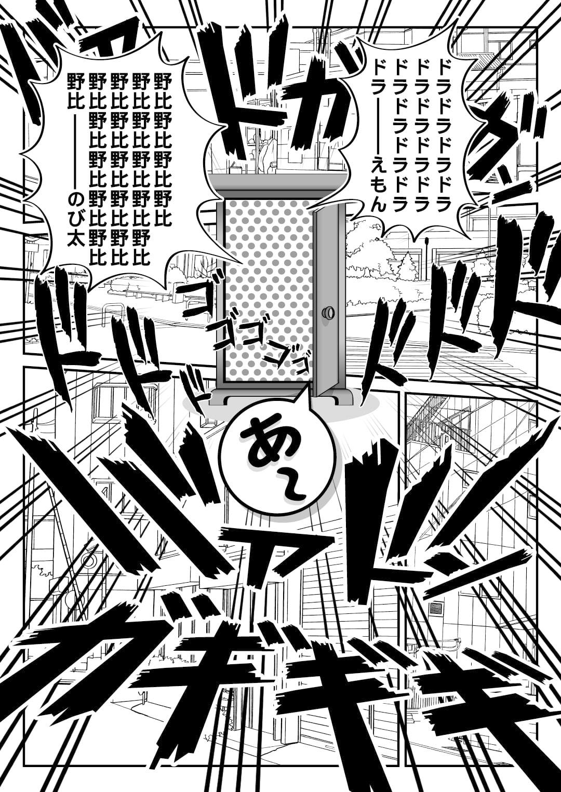
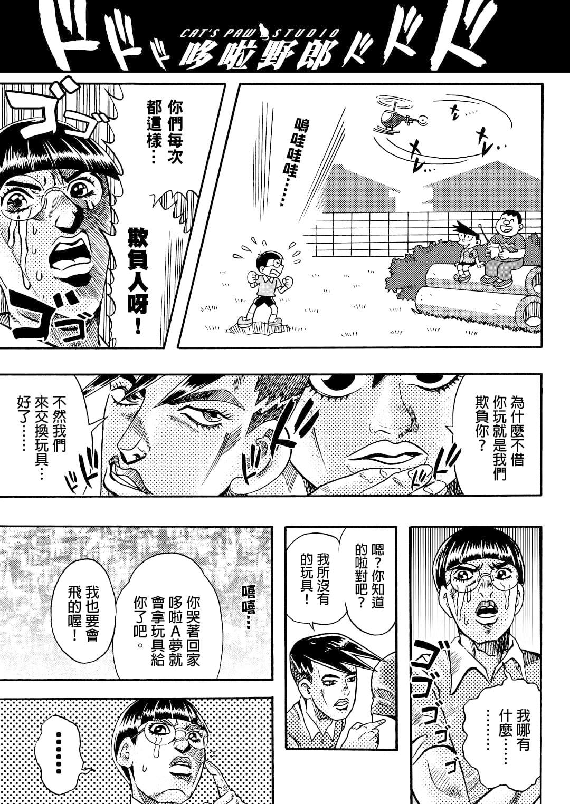
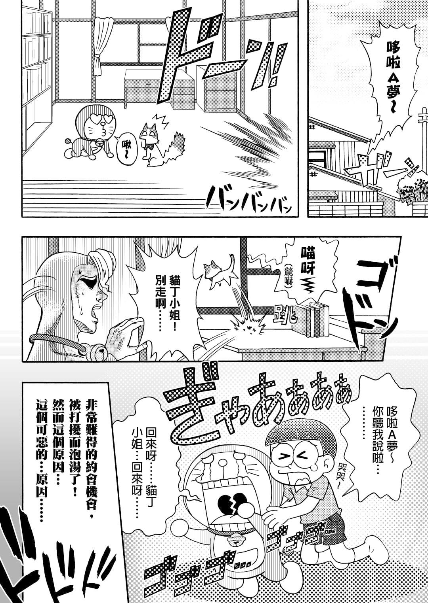
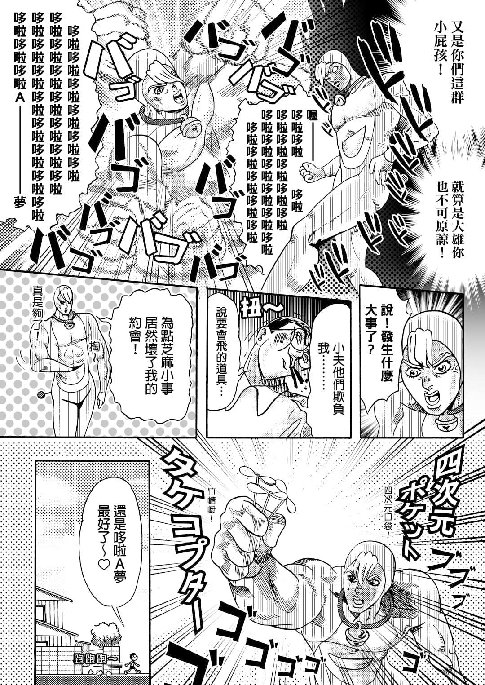
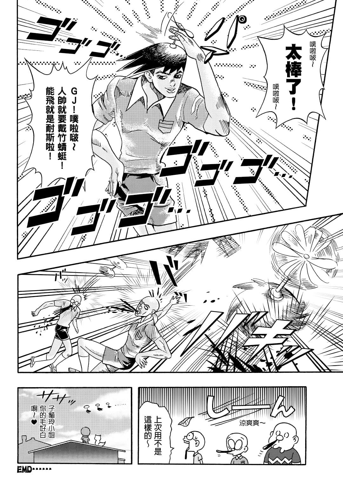
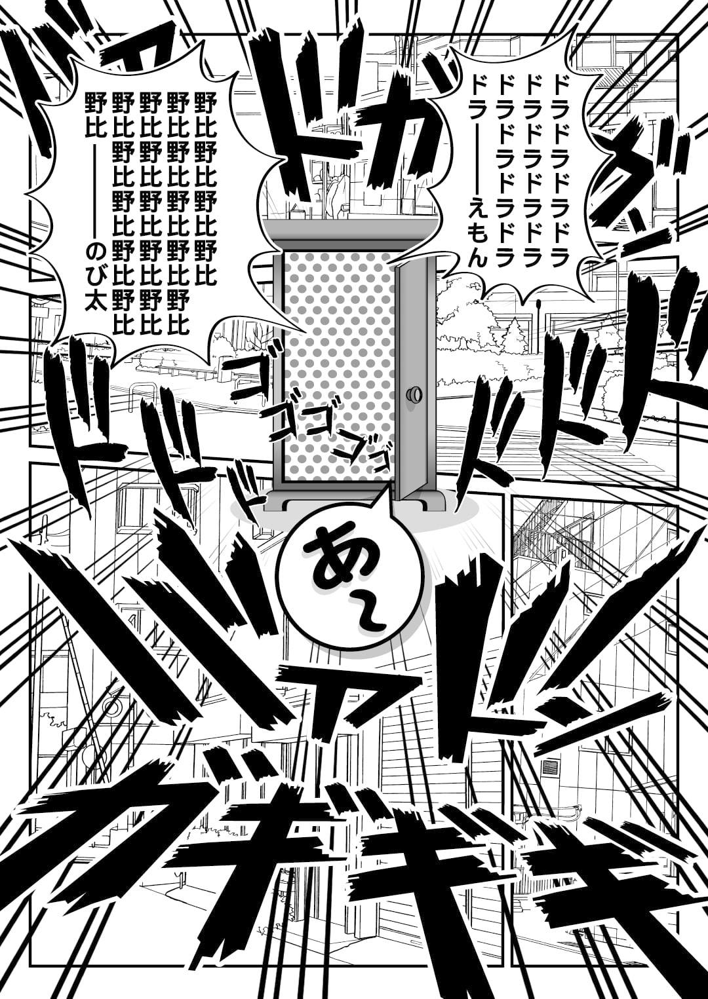
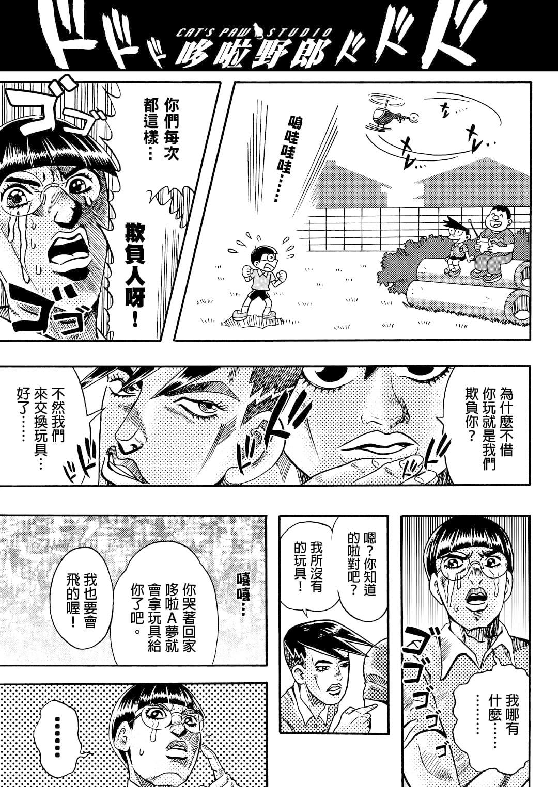
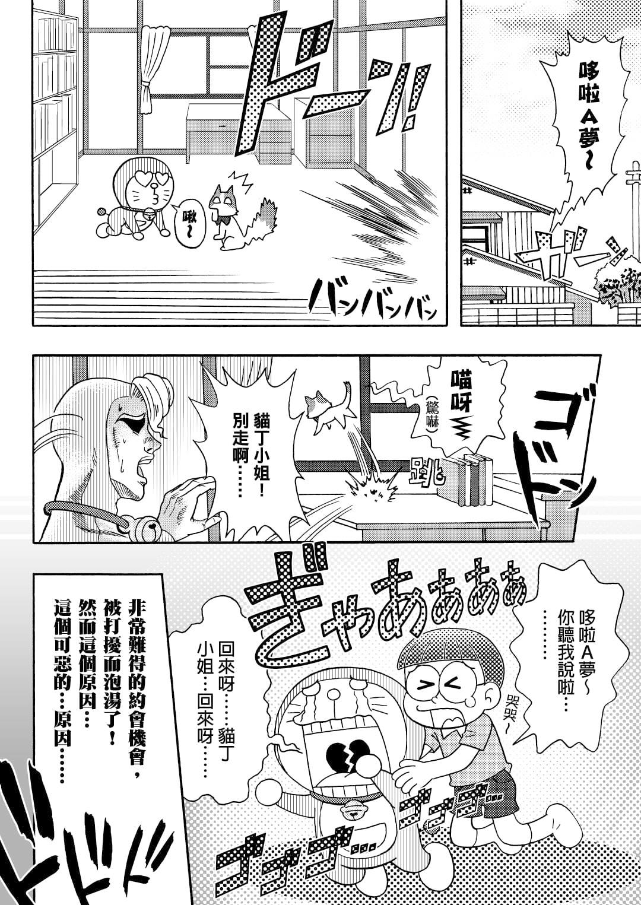
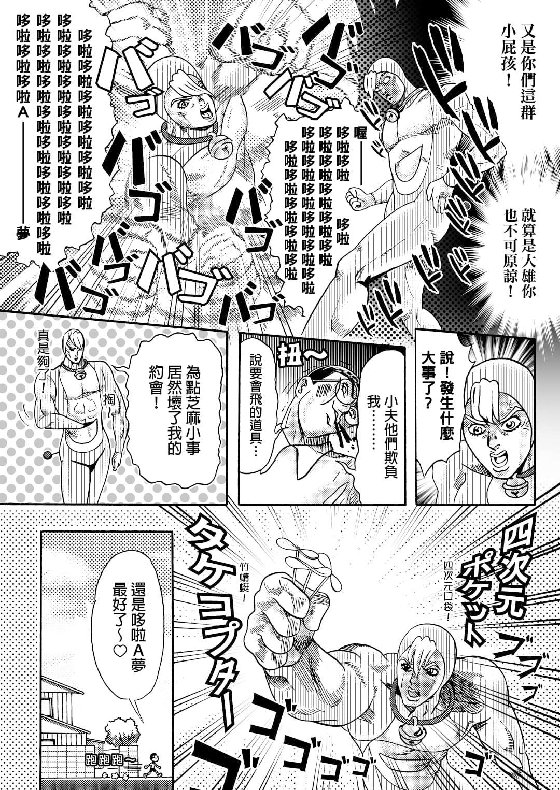
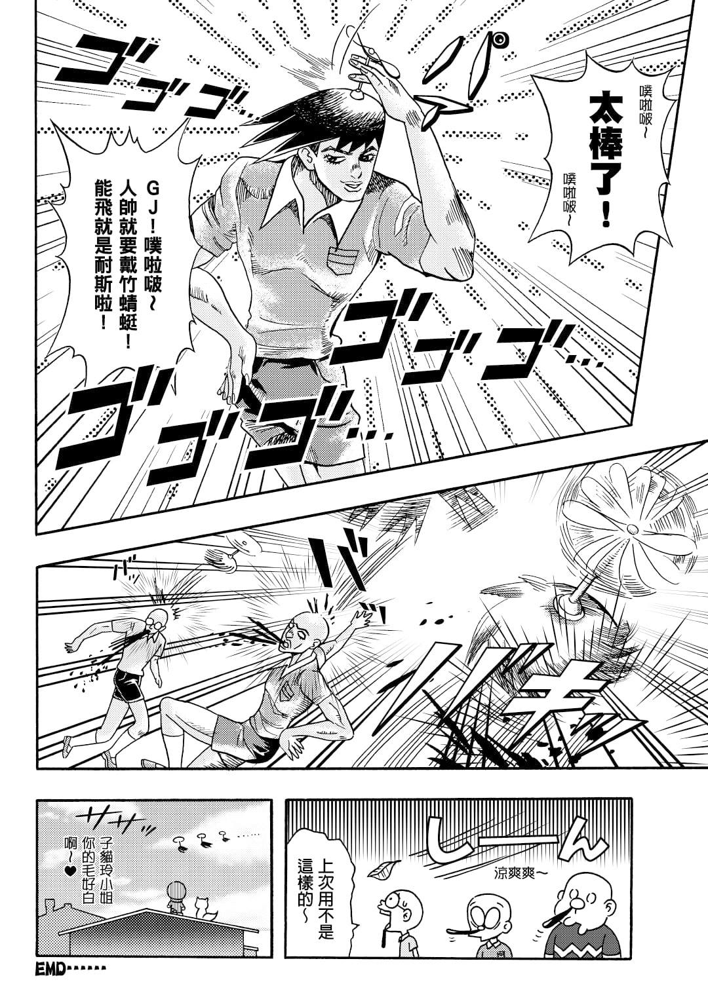

以前發布過的，之前因為解系度太低，刪除重發。
然後就刪除錯相簿啦~~~~~~~
希望網路上別再傳AV夢那篇了，趣味搞笑大致還能笑笑，
可是有時過頭低級了，隨然好笑但是也傷害了童年回憶。
看完那篇我笑了，但是看到電影宣傳後的網路文我也哭了。
有些事還是別太過頭的好，至少至少至少要低調點吧。
本篇製作時候考慮到效果字與擬聲詞的畫面表現效果，
最後為了表現JOJO的氛圍還是決定使用日文效果字。
中文在繁雜的字體與音效表現這點上，
表示手法還是比較難掌控。
子貓玲/CoNeCoLin | Original Date: 2020-08-17 10:46:44
 








